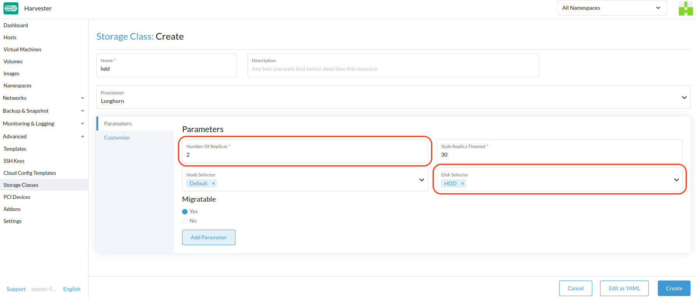

StorageClass
SUSE Virtualization 使用 StorageClasses 来描述 SUSE Storage 如何配置卷。SUSE Storage StorageClasses 可以映射到集群管理员创建的副本策略、节点调度策略或磁盘调度策略。在其他存储系统中，这个概念被称为 profiles。
|
默认的 StorageClass 为避免此问题，您可以执行以下任一操作：
|
有关使用外部容器存储接口 (CSI) 驱动程序进行卷配置的支持信息，请参见 第三方存储支持。
创建 StorageClass
-
UI
-
API
-
Terraform
|
创建 StorageClass 后，参数 部分中的字段和大多数其他选项将变为不可变。 |
-
转到 高级 → StorageClasses。

-
在一般信息部分，配置以下内容：
-
名称:StorageClass 的名称。
-
描述（可选）：StorageClass 的描述。
-
配置器：确定用于配置卷的卷插件的配置器。
-
-
在 参数 选项卡上，配置以下内容：
-
副本数量：为每个 SUSE Storage 卷创建的副本数量。默认值为
3。 -
过期副本超时：在清理状态为 SUSE Storage 的副本之前，
ERROR等待的分钟数。默认值为30。 -
节点选择器（可选）：在卷调度期间要匹配的节点标签。您可以在主机配置屏幕上添加节点标签（主机 → 编辑配置）。
-
磁盘选择器（可选）：在卷调度期间要匹配的磁盘标签。您可以在主机配置屏幕上添加磁盘标签（主机 → 编辑配置）。
-
可迁移：启用 实时迁移 的设置，适用于使用 StorageClass 创建的卷。默认值为
Yes。
-
|
如果使用副本数量为 |
-
在 自定义 选项卡上，配置以下内容：
-
回收策略：适用于使用 StorageClass 创建的卷的回收策略。默认值为
Delete。-
删除：当卷声明被删除时，删除卷及其底层设备。
-
保留：保留卷以便手动清理。
-
-
允许卷扩展：允许卷扩展的设置，涉及块设备的调整大小和文件系统的扩展。当该设置启用时，您可以通过编辑相应的 PVC 对象来增加卷的大小。
您只能使用卷扩展功能来增加卷的大小。
-
卷绑定模式：控制卷绑定和动态预配发生时机的设置。默认值为
Immediate。-
立即：在创建 PVC 后绑定并配置卷。
-
等待第一个消费者：在使用 PVC 的虚拟机创建后绑定并配置卷。
-
-
-
单击*创建*。
apiVersion: storage.k8s.io/v1
kind: StorageClass
metadata:
annotations:
storageclass.beta.kubernetes.io/is-default-class: 'true'
storageclass.kubernetes.io/is-default-class: 'true'
name: single-replica
parameters:
migratable: 'false'
numberOfReplicas: '1'
staleReplicaTimeout: '30'
provisioner: driver.longhorn.io
reclaimPolicy: Delete
volumeBindingMode: Immediate
allowVolumeExpansion: trueresource "harvester_storageclass" "single-replica" {
name = "single-replica"
is_default = "true"
allow_volume_expansion = "true"
volume_binding_mode = "immediate"
reclaim_policy = "delete"
parameters = {
"migratable" = "false"
"numberOfReplicas" = "1"
"staleReplicaTimeout" = "30"
}
}数据本地性设置
当至少一个 SUSE Storage 卷的副本必须尽可能与使用该卷的 pod 调度在同一节点上时，可以使用 数据本地性 参数。
SUSE Virtualization 正式支持数据本地性。这适用于从 镜像 创建的卷。要配置数据本地性，请在 SUSE Virtualization UI 上创建一个新的 StorageClass (StorageClass → 创建 → 参数)，然后添加以下参数：
-
键：
数据本地性 -
值：
已禁用或尽力而为

数据本地性选项
SUSE Virtualization 目前支持以下选项：
-
已禁用：应用后，SUSE Storage 可能会或可能不会在与使用该卷的 pod 相同的节点上调度副本。这是默认选项。 -
尽力而为：应用时，SUSE Storage 始终尝试在使用该卷的 pod 所在的同一节点上调度副本。SUSE Storage 即使在由于环境限制（例如，磁盘空间不足或磁盘标签不兼容）导致本地副本不可用时，也不会停止该卷。
|
SUSE Storage 提供了一个名为 |
有关更多信息，请参见 数据本地性 的 SUSE Storage 文档。
容器化数据导入器（CDI）设置
SUSE Virtualization 与 容器化数据导入器（CDI）集成，以处理以下 StorageClasses 的虚拟机映像管理：
-
Longhorn V2 数据引擎
-
LVM
-
第三方存储
您可以使用 SUSE Virtualization 用户界面或 CDI 注释来覆盖 StorageClass CDI 属性的默认设置。
|
SUSE Virtualization 用户界面目前不支持与第三方存储一起使用 CDI。您必须将 SUSE Virtualization CDI 注释直接应用于第三方 StorageClass。 |
为了启用对 CDI 设置的编辑以进行第二天的操作，SUSE Virtualization 提供了 StorageClass 属性，自动更新底层 CDI 设置。
CDI 设置 屏幕上的每个字段对应于 StorageClass 中的一个注释。
| 用户界面字段 | 注释 | 说明 | 支持的值 | 示例 |
|---|---|---|---|---|
卷模式 / 访问模式 |
|
默认 PVC 卷模式和访问模式 |
包含卷模式和访问模式的 JSON 对象 |
|
卷快照类 |
|
在此 StorageClass 下拍摄虚拟机镜像快照时使用的 VolumeSnapshotClass 名称。此设置仅在您使用 |
有效的 VolumeSnapshotClass 名称 |
|
克隆策略 |
|
用于使用此StorageClass的虚拟机镜像创建的卷的克隆策略。 |
|
|
文件系统开销 |
|
计算 PVC 大小时要考虑的文件系统开销百分比。 |
介于 0 和 1 之间的十进制值，最多 3 位数字。 |
|
StorageClass YAML 配置示例：
apiVersion: storage.k8s.io/v1
kind: StorageClass
metadata:
name: lvm
annotations:
cdi.harvesterhci.io/storageProfileCloneStrategy: snapshot
cdi.harvesterhci.io/storageProfileVolumeModeAccessModes: '{"Block":["ReadWriteOnce"]}'
cdi.harvesterhci.io/storageProfileVolumeSnapshotClass: lvm-snapshot
cdi.harvesterhci.io/filesystemOverhead: '0.05'|
避免直接更改存储控制文件或CDI。相反，允许 SUSE Virtualization 控制器通过使用 CDI 注释来同步和持久化存储控制文件配置。 |
以下是支持的 StorageClasses 的默认值：
-
Longhorn V2 数据引擎
-
cdi.harvesterhci.io/storageProfileCloneStrategy："copy" -
cdi.harvesterhci.io/storageProfileVolumeSnapshotClass："longhorn-snapshot"
-
-
LVM
-
cdi.harvesterhci.io/storageProfileVolumeModeAccessModes：'{"Block":["ReadWriteOnce"]}' -
cdi.harvesterhci.io/storageProfileCloneStrategy："snapshot" -
cdi.harvesterhci.io/storageProfileVolumeSnapshotClass："lvm-snapshot"
-
-
第三方存储：请在 CDI 库中查看
storagecapabilities.go。如果未列出提供者，您必须指定cdi.harvesterhci.io/storageProfileVolumeModeAccessModes注释。
使用案例
HDD场景
随着 StorageClass 的引入，用户现在可以使用 HDDs 进行分层或归档冷存储。
|
不建议在具有良好性能磁盘要求的来宾 RKE2 集群或虚拟机中使用 HDD。 |
推荐实践
首先，在 Host 页面上添加您的 HDD，并根据需要指定磁盘标签，例如 HDD 或 ColdStorage。有关如何添加额外磁盘和磁盘标签的更多信息，请参见 Multi-disk Management 以获取详细信息。


然后，为 HDD 创建一个新的 StorageClass（使用上述磁盘标签）。对于容量大但性能较慢的硬盘，可以减少副本数量以提高性能。

您现在可以使用上述`StorageClass`，利用主要用于冷存储或归档目的的HDD来创建卷。